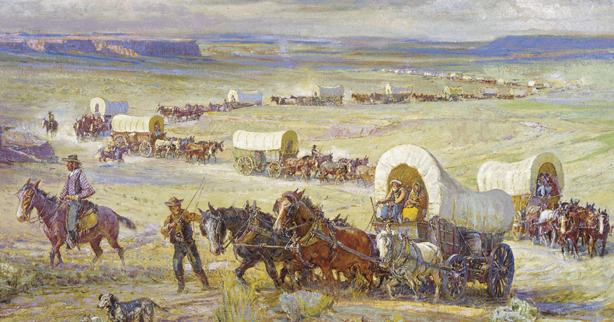

Topic: Articles of Confederation,
Is the A.O.C. really falling apart? Well, maybe the articles of confederation were born from the fires of revolt and served the United States well in its fight for independence. For fear of a strong central government, it limited the scope of the national power, leaving much authority in the hands of individual states. But now the cracks are starting to show. Weak central government authority to tax or regulate commerce had troble fulfilling its basoc fimctopm. Rasing funds to pay off war debts relies on voluntary contributions from states, often prioritizing their own funds. Each state trade war erupted as states empowered to set their own tariffs levied exorbitant taxes on goods crossing their borders. Unrepersenative system, unlike each state under the Articles, only gets a single vote among larger states, like Virginia, who felt their interests were unfairly subordinated to those of smaller states. Without an executive branch to enforce laws and treaties, the Confederation lacked the muscle to implement decisions made by Congress. All four points made the articles of conference really show they might just fall apart.
latest news
13 colonies broke away from England!
The 13 colonies just broke away from England...

People are now settling in the west.
People are moving more westward for a better future...

Farmers are rebelling against the government.
Farmers are protesting against the government, but why?...
The constitution are getting created.
1887; Philadelphia. There is conflict within...